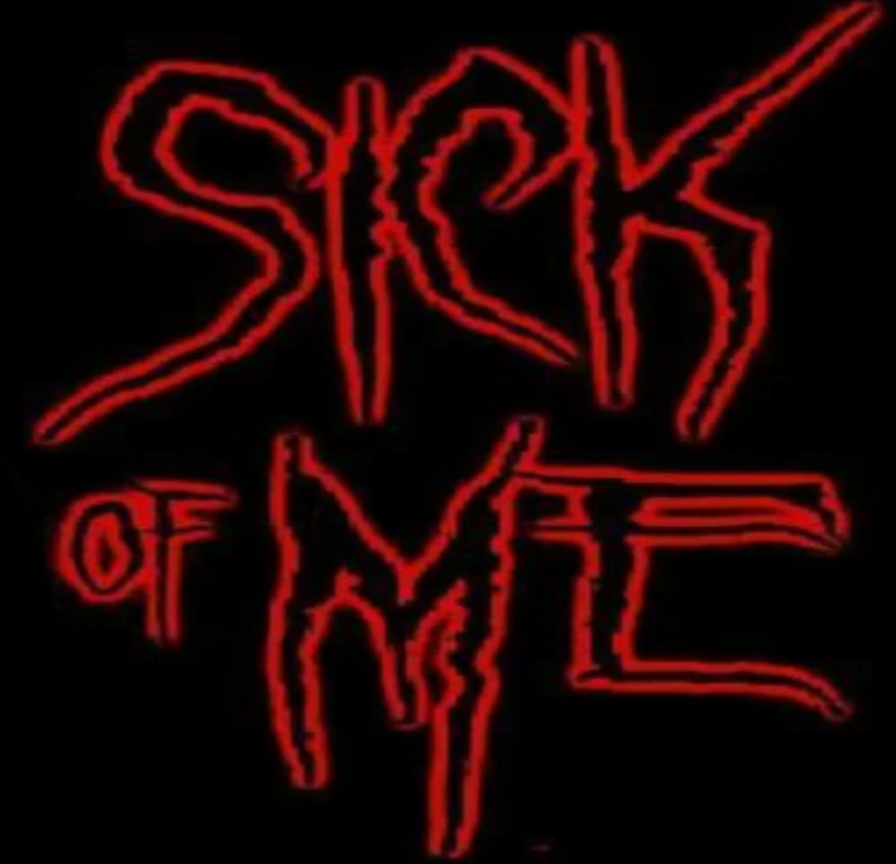
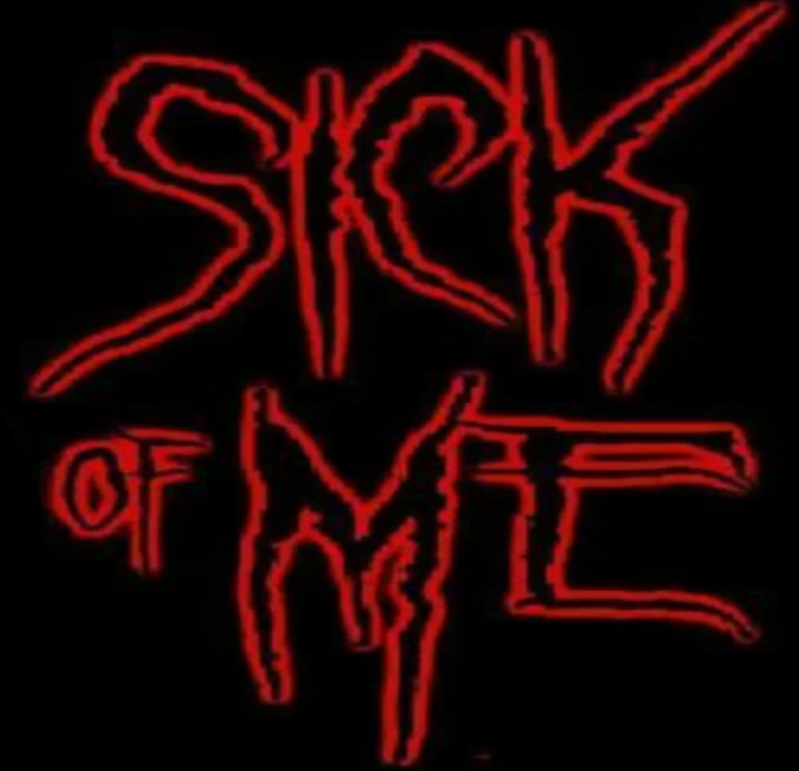

About Me
 

Why this name?
this is my solo band project "sick of me" my old band name was "no one cares for me" but I changed it to make it sound less emo. all together ive been doing this band thing for 20+ years. i basically got sick of doing all the work my self.
Do you play live?
the only live experience ive had was when i do karaoke at some local bars cus every song i cover i sing with the same distorted vocals.How, do you think, does the internet (or mp3) change the music industry?
i love downloading music. i used to be on napster when it first started. i refuse to sell my music because its just a hobby for me.
you sign a record contract with a major label?
yes only if i can maintain my style and the label has to be a laid back rock environment.
What bands do you listen to?
-
3teeth, 10 years, 12 foot ninja, 32 leaves, 311, aperfect circle, adema, alice in chains, Andrew W.K., Apocalyptica, Babymetal, Beastie boys, Birthday Massacre, Bloodhound Gang, Blue October, Breaking Benjamin,
Bush, Camp Kill Yourself, Celldweller, Chevelle, Circus Of Dead Squirrels, Coal Chamber, CoLd, Combichrist,
Cradle of Filth, The Cure, Deadsy, Deftones, Depeche mode, Dethklok, Devil Driver, Disturbed, The Doors,
Dope, Drowning Pool, Evans blue, Everclear, Faith No More, Filter, The Faint, Family Ruin, Foo Fighters,
Ghost b.c., Gorillaz, Green jelly, Gwar, Hatebreed, H.I.M, Jack off jill, Janes Addiction, Kittie, KMFDM,
KoRn, Lamb of god, Lords Of Acid, Marilyn Manson, Mc Chris, Mindless Self Indulgence, Ministry, Monster
Magnet, Mudvayne, Mushroom Head, My Darkest Days, Neurosonic, Nine Inch Nails, Nirvana, Orgy, Pink Floyd,
Primus, The Prodigy, Psychostick, Rage Against The Machine, Rammstien, Richard Cheese, Rob Zombie, Seether,
Sevendust, Sick of me, Skillet, Skindred, Skinny Puppy, Skrillex, Slayer, Slipknot, The Smashing
Pumpkins,Sound garden, Spineshank, Stained, Static X, Stone Temple Pilots, Submersed, System Of A Down,
Taproot, Tenacious D, Third Eye Blind, Three days Grace, Tom petty, Tool, Tori Amos, Trapt, Type O Negative,
VolBeat, White Zombie, Zeromancer.
Equipment used:
- Audacity,j4t, goldwave (recording software),
Hammerhead, (drum machine)
sound plant (keyboard)
guitar,
bass,
me,
bitches